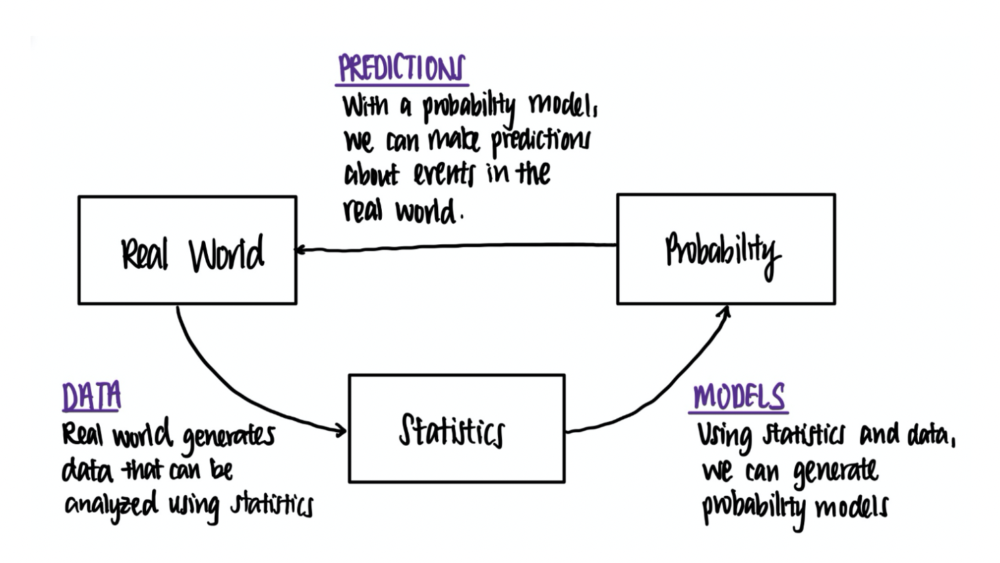
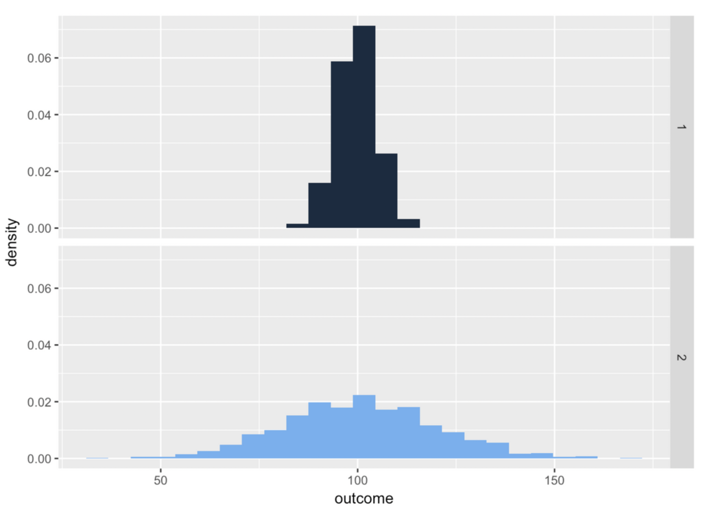

Chapter 9 - Statistical Models
Contents
# This chapter uses the package ggformula, which takes a few minutes to download on Google Colab.
# Run this first so it's ready by the time you need it
install.packages("ggformula")
install.packages("dplyr")
library(ggformula)
library(dplyr)
Chapter 9 - Statistical Models#
In the prior chapter we learned about deterministic models, where we know how variables are related; and we learned about probability models, where we know the full population of data that we can do probability calculations on.
Next is statistical models, where we don’t have either. We have some data, and maybe we have some idea about what variables are important, so we try to build a simplified model based on this limited viewpoint we have.
9.1 From populations to samples#
The “some data” part of the sentence above is really important for distinguishing statistical models from probability models. In the previous chapter we discussed how knowing a probability model allows us to predict outcomes of future events. Even in cases where we don’t know the data generation process, we can still create an accurate probability model if we know the entire population of outcomes - AKA, all possible outcomes. For example, if we wanted to know the probability that someone in the US had COVID-19 right now, and if we were able to test every individual in the country right this moment, we’d be able to count how many people were covid-positive out of the entire group and calulate probability that way. The population is all possible people in the group we want to understand, so if we have data from that entire group, we can calculate summaries and probabilities really easily.
However, it is almost always impractical, or straight up impossible, to collect data from the entire population you care about. If a psychologist cares about a general question like “the way humans think,” there’s no way they can test every human on the planet in order to generate an accurate distribution of the population data. This is why you can never prove something in statistics - you never definitively know all the possibilities.
Instead, one of the foundational ideas in statistics is that we can make guesses about the features of an entire population based on a smaller sample of individuals from that population.
9.2 The sampling process#
Anyone living in the United States will be familiar with the concept of sampling from the political polls that have become a central part of our electoral process. In some cases, these polls can be incredibly accurate at predicting the outcomes of elections. The best known example comes from the 2008 and 2012 US Presidential elections, when the pollster Nate Silver correctly predicted electoral outcomes for 49/50 states in 2008 and for all 50 states in 2012. Silver did this by combining data from 21 different polls, each of which included data from about 1000 likely voters. If we consider the population of interest during an election to be all the votes of people who cast a vote, then in this case the intentions of that 1000-person sample very closely matched the overall voting behavior of the entire electorate. Yet, the 2016 US Presidential election was noteworthy for how badly polls predicted the outcome (Clinton was strongly favored to win by many polling samples, but the electorate behaved differently). This illustrates the extreme importance of picking a sample that is representative of your population of interest.
Since you don’t know the population distribution (which is the whole reason we’re sampling data in the first place), it can be hard to know how representative a sample is. Over time, statisticians have figured out that the best way to pick a sample that most closely resembles the shape, center, and variability of the target population is to draw a random sample, where every member of the population has an equal chance of getting picked for the sample. This is also usually impractical, though. For a psychologist, it’s not as easy to contact, recruit, or even know about some people in the population compared to others (indeed, the data in psychology results are often based on an over-representation of US psychology students, since universities require their psych majors to participate in studies!). For an ecologist, it is much easier to access animals that live in one site nearby, versus the same species that lives in a remote canyon. You can probably think of examples in other fields of study that make it hard to sample every member of the population at equal likelihood.
Instead, there are a variety of more practical sampling methods that are easier to do, and which one hopes is mostly similar to what a random sample looks like. The most common type is that described above, where the sample is comprised of datapoints that were the easiest to obtain. This is called convenience sampling. The samples are chosen in a way that is convenient to the researcher. In real life, most studies are convenience samples of one form or another. This sometimes does a good job of creating a random sample, but can instead create a biased sample if there’s some reason for why the sample is easier to collect that also affects the variables being studied. E.g., can you think of any way psychology students might differ from students of other majors? There are other types too that are less common that you may learn about in other classes (.e.g, stratified sampling, snowball sampling, etc.). Whatever sampling method you use, the most important thing to keep in mind is how likely it is to create a representative sample, and what factors to watch out for that might contribute to bias.
In addition, it is important to know the difference between sampling with replacement and sampling without replacement. With replacement means that, after picking a data point out of the entire population for inclusion in the sample, you record its value and then put it back “into the bag” of the population, so that it has a chance of being selected again. Without replacement is the opposite - once a data point is recorded, it can’t be selected again. In real world data collection, you almost always use sampling without replacement because you want to collect as much unique information in your data as possible. I.e., once someone has participated in your study, you don’t let them participate again. However, for some theoretical or simulating procedures, sampling with replacement is an underlying assumption.
9.3 Form of a statistical model#
The other important ingredient for understanding statistical models is that we have some idea about the data generation process that would produce our population of interest, so we try to describe that. Recall at the beginning of the last chapter where we talked about the form of a deterministic model like gravity:
We used an equation to denote which variables contribute to gravitational force and how they relate to each other. With statistical models, even though we usually aren’t able to be as exact or sophisticated with guessing the data generation process, we still use equations to express how we think some variables interact to produce an outcome variable.
For example, in chapter 6 we introduced how some variables can explain variation in other variables. If someone’s sex explains some variation in the length of their thumb, we could write that into an equation as:
where Thumbi is the ith person’s value on Thumb and Sexi is the ith person’s value on Sex. By convention, the outcome variable Thumb is written on the left of the equal sign and the explanatory variable Sex is written to the right.
Note that on first look, this model isn’t very good. If something as simple as gravity needs a more complex formula to model it, there’s likely many more things we would need to add to this model to predict values of Thumb perfectly. But as a famous saying goes, “all models are wrong; some are useful.” This is our initial guess about what the data generation process is for Thumb. Knowing someone’s sex, we get a little bit better at guessing their thumb length than if we didn’t know their sex. Our goal as analysts and psychological theorists more generally is to create a model that is at least a little more helpful than guessing blindly.
9.4 Modeling a distribution with a single number#
At its most basic level, a statistical model can be thought of as an equation that produces a predicted score for each observation in a distribution. The simplest models we could consider generate the same predicted score for every observation in a distribution — a single number to characterize a whole distribution.
Does this sound familiar? If you had to pick one number to represent an entire distribution, how would you pick it? Put another way - how were we previously summarizing distributions of variables?
Depending on how a variable is measured (e.g., quantitative or categorical), and on the shape of its distribution, we will use different procedures for choosing one number as a model. For a quantitative variable whose distribution is roughly normal, a number right in the middle (the mean) might be the best-fitting model. Remember, we aren’t saying that such a simple model is a good model — just that it’s better than nothing! If a distribution is skewed left or right, the best model might be the median instead. For a categorical variable, the best model is generally the category that is most frequent (the mode).
Let’s zero in on just distributions of quantitative variables for now. Take a look at the two distributions below for variables 1 and 2.
A single number, even a well-chosen number, is not a very good model. It may be a better model for variable 1 than variable 2 above, but it’s still not very good at predicting what any one value on the distribution will be. Most scores are not the same as the number we choose as the model.
This is where the “error” term of a model comes in: once we choose a number to model a distribution, we can think of the variation around that number as error. It is the stuff we’re missing that would be needed to adjust what we’re predicting into what the actual value is. As we can see above, a one-number model for a distribution with less spread seems to have less error, and thus a better fit, than a one-number model for a distribution with more spread. The reason for this is that the error around the model is greater for the distribution with more spread.
9.5 The mean as a model#
The simple model we have started with — using the mean to model the distribution of a quantitative variable — is sometimes called the empty model or null model. Note that it’s empty because it doesn’t have any explanatory variables in it yet. As an equation, it looks like:
Our empty model always predicts the same outcome value because it always uses the same value as an input (the mean of the outcome variable’s distribution). If the mean is our model, then fitting the model to data simply means calculating the mean of the distribution.
Let’s think this through in the context of students’ thumb lengths. We will use a tiny dataset, which we’ll put in a data frame called tiny_fingers.
student_ID <- c(1, 2, 3, 4, 5, 6)
thumb <- c(56, 60, 61, 63, 64, 68)
tiny_fingers <- data.frame(student_ID, thumb)
tiny_fingers
We can make a distribution of the variable Thumb using gf_histogram from the package ggformula. We can also add a visual line to denote where the mean is, using the function gf_vline to add a layer to this plot:
gf_histogram(~ thumb, data = tiny_fingers) %>% #pipe the base histogram into a layer that adds the mean line
gf_vline(., xintercept = mean(tiny_fingers$thumb), color = "blue")
Remember that our model is not the actual thumb values in tiny_fingers, but our guess at what they will be. In this case, we’re always guessing the mean (the blue line). Always guessing the same number for every data point is easy, but later you will learn to fit more complex models to your data.
9.6 Automatically building a model#
In the example above, we chose our model ahead of time: Thumb = 62. But usually you don’t know what exact numbers to use in the equation of a statistical model. In R, there is a function you can use to automatically build a model that will be the best description of your data, given a model format that you specify.
The R function we are going to use is lm(), which stands for “linear model.” (We’ll say more about why it’s called that in a later chapter.) For lm() to work, you need to pass it a formula, rather than an equation.
What’s the difference? Remember when we were graphing things with ggformula, we needed to give the function a formula to tell R which variable should be on the y-axis and which should be on the x-axis: e.g., Thumb ~ Sex. Because we’re using a ~ instead of a = here, this is not the same thing as saying “The value of Thumb is exactly proportional to the value of Sex.” Instead, it is saying a more general statement “Thumb varies by Sex.” Passing a formula like this to lm() tells the function to build an exact statistical equation that would best fit the type of relationship the formula describes.
For an empty model, we don’t have any variables to use as explanatory variables. We just want R to find the best-fitting single-number summary of the outcome variable. In this case, the formula would look like Thumb ~ NULL. “NULL” is a special value in R (like TRUE or FALSE) that tells the computer to treat that spot as empty. You can see now why this is known as an empty model! The second argument lm() needs is a dataset to fit the model to.
Here’s the code we use to fit the empty model, followed by the output.
lm(thumb ~ NULL, data = tiny_fingers)
The output of this command may seem a little strange right now with words like “Coefficients” and “Intercept.” We’ll cover what those mean a little later. But it does give you back the mean of the distribution (62), as expected. Thus, this function finds the best-fitting number to use as our model, given a more general formula we specified. To then make a more specific statistical model in equation format, we’d simply slot that value in on the right side of the equation:
Automatically finding a solution to which number best represents the distribution of the outcome variable is called “fitting the model”. It will be helpful to save the results of this fitted model in an R object. Here’s code that uses lm() to fit the empty model, then saves the results in an R object called tiny_empty_model:
tiny_empty_model <- lm(thumb ~ NULL, data = tiny_fingers)
If you want to see what the model estimates are after running this code, you can just type the name of the object you saved the model to:
tiny_empty_model
Now that you have fit the empty model to the tiny set of data, try using lm() to fit the empty model to the full fingers dataset.
fingers <- read_csv("https://raw.githubusercontent.com/smburns47/Psyc158/main/fingers.csv")
# modify this to fit the empty model of Thumb
empty_model <- #YOUR CODE HERE
# this prints the best-fitting number
empty_model
# make a histogram of Thumb and draw the line for the mean
gf_histogram(#YOUR CODE HERE) %>%
gf_vline(., xintercept = #YOUR CODE HERE)
9.7 Thinking about error#
Using our tiny data set, we found the mean thumb length to be 62mm. Sticking that value into the equation of a statistical model, if we were predicting what a seventh observation might be, we’d go with 62mm. But if we take the mean and look backwards at the data we have already collected, we could also generate a “predicted” thumb length for each of the data points we already have. This prediction answers the question: what would our model have predicted this thumb length to be if we hadn’t collected the data?
There’s an R function that will actually do this for you. Here’s how we can use it to generate the predicted thumb lengths for each of the six students in the tiny dataset. Remember, we already fit the model and saved the results in tiny_empty_model:
predict(tiny_empty_model)
Why would we want to create predicted thumb lengths for these six students when we already know their actual thumb lengths? We will go into this a lot more in the next chapter, but for now, the reason is so we can get a sense of how wrong our automatically generated statistical model is. The value of everyone’s thumb lengths isn’t actually 62, so we want to know how far each of our data points are from the prediction that our model would have made. It gives us a rough idea of how well our model fits our current data and how big the error is.
In order to use these predicted scores as a way of seeing error, we first need to save the prediction for each student in the dataset. When there is only one prediction for everyone, as with the empty model, and when there are only six data points, as in our tiny data set, it seems like overkill to save the predictions but just go with it for now. Later you will see how useful it is to save the individual predicted scores. For example, if we save the predicted score for each student in a new variable called predicted, we can then subtract each student’s actual thumb length from their predicted thumb length, resulting in a deviation from the prediction.
Use the function predict() and save the predicted thumb lengths for each of the six students as a new variable in the tiny_fingers dataset. Then, print the new contents of tiny_fingers.
# modify this to save the predictions from the tiny_empty_model
tiny_fingers$predicted <-
# this prints tiny_fingers
tiny_fingers
We have developed the idea of a general statistical model to take the form DATA = MODEL. However, since all models are wrong, plugging in a value (like the mean) for the MODEL spot will not perfectly calculate what the value should be in the DATA spot. To do a better job at guessing DATA we’d probably need to add more stuff to the model side of the equation. However, right now we don’t know anything else besides the mean of DATA. So in order to recognize how unperfect our model is, we can rewrite the equation as:
Even if we don’t know what causes error in a model, so long as we recognize how much it is (how much the model misses the mark for each value of data), we can technically recompute each actual data value perfectly.
Therefore, we can calculate error in our data set by just shuffling this equation around to get the formula:
Using this equation, if someone has a thumb length larger than the mean (e.g., 68), then their error is +6. If they have a thumb length lower than the mean (e.g., 61) then we can calculate their error as -1.
We generally call this calculated error the residual - the difference between our model’s prediction and an actual observed score. The word residual should evoke the stuff that remains because the residual is the leftover quantity from our data once we take out the variance explained by our model.
To find these errors (or residuals) in an empty model you can just subtract the mean from each data point. In R we could just run this code to get the residuals:
tiny_fingers$thumb - tiny_fingers$predicted
The numbers in the output indicate, for each student in the data frame, what their residual is after subtracting out the model (which is the mean in this case).
Modify the following code to save these residuals in a new variable in tiny_fingers called residual.
# modify this to save the residuals from the tiny_empty_model
tiny_fingers$residual <-
# this prints TinyFingers
tiny_fingers
These residuals (or “leftovers”) are so important in modeling that there is an even easier way to get them in R. Again, we will use the results of our model fit, which we saved in the R object tiny_empty_model:
resid(tiny_empty_model)
Notice that we get the same numbers. But instead of passing the data and the model’s predictions as arguments, we just tell R which model to get the residuals from.
Modify the following code to save the residuals that we get using the resid() function in the tiny_fingers data frame. Give the resulting variable a new name easy_residual.
# modify this to save the residuals from the tiny_empty_model (calculate them the easy way)
tiny_fingers$easy_residual <-
# this prints TinyFingers
tiny_fingers
Note that the variables residual and easy_residual should be identical. You only used different methods to get the same residuals.
Here we’ve plotted histograms of the three variables thumb, predicted, and residual.
The distributions of the data and the residuals have the same shape. But the numbers on the x-axis differ across the two distributions. The distribution of thumb is centered at the mean (62), whereas the distribution of residual is centered at 0. Data that are smaller than the mean (such as a thumb length of 58) have negative residuals (-4) but data that are larger than the mean (such as 73) have positive residuals (11). The residuals (or error) around the mean always sum to 0. Therefore, the mean of the errors will also always be 0, because 0 divided by n equals 0.
Now that you have looked in detail at the tiny set of data, explore the predictions and residuals from the empty_model fit earlier from the full set of fingers data. Add them as new variables (Predicted and Residual) to the fingers data frame.
# this code from before fits the empty model for Fingers
Empty.model <- lm(Thumb ~ NULL, data = fingers)
# generate predictions from the Empty.model
fingers$Predicted <-
# generate residuals from the Empty.model
fingers$Residual <-
# this prints out 10 lines of Fingers
head(select(fingers, Thumb, Predicted, Residual), 10)
Then make histograms of the variables Thumb, Predicted, and Residual. Which two histograms will have a similar shape?
# make a histogram for Thumb
gf_histogram( )
# make a histogram for Predicted
# leave the gf_lims() part -- it makes the graph easier to read
gf_histogram( ) %>%
gf_lims(x = range(fingers$Thumb))
# make a histogram for Residual
gf_histogram( )
9.8 More on mathematical notation of a model#
The way we’ve used so far for writing a statistical model, outcomei = model + errori, uses mathematical structure to show how to calculate some value i based on a model and that item’s residual. Let’s now go all the way to writing out a model in formal mathematical notation, without using words:
Here, “ei” stands for the ith error or residual. And as you may recall from chapter 5, putting a line above Y in this equation, making it “Y-bar”, indicates the mean value of Y. Thus this equation means “the ith value of Y is equal to the mean of Y plus the ith residual.”
Another way you could write this is:
The Yi with an arrow on top, pronounced “Y-hat”, means “the predicted value of Yi.” So, this equation simply states that each value of Yi can be calculated as the sum of its predicted value based on the model, and its deviation from that predicted value.
In our tiny dataset, for example, student 1 had a thumb length of 56. So, Y1 = 56. Under our simple model we used the mean as the predicted value for all students, so Y^1 = Y¯ = 62. Therefore, e1 would have to be -6 to make the equation true — the exact value of the residual we calculated for student 1.
As we develop more complex models, we still will end up with a single predicted value of Y^i for each score based on our model. But we will predict this value using more than just the mean.
9.9 Notation for the General Linear Model#
Finally, we will complicate things a little more and introduce one more form of our DATA = MODEL + ERROR formulation called the General Linear Model (GLM) notation:
This is a more abstract version of the equation above; we have substituted b0 (we read this as “b sub 0”) for the mean, Y¯. Don’t be concerned if it doesn’t make complete sense why we’re replacing perfectly useful words with mathematical symbols. This is one of those things that will take time to understand. The main thing to know for now is that b0 can represent the mean, but it doesn’t have to.
For our simple model (the empty model) it does represents the mean. But for other models, and other situations, it can represent other values. For example, if our outcome variable were categorical, the interpretation of b0 would need to be adjusted to be the mode, which is the best single predictor of the next observation’s value on a categorical variable.
Indeed, this flexibility is what makes the General Linear Model general. Whenever you see a GLM model statement, you should think carefully about what, in the particular situation, each symbol represents.
9.10 Statistics and parameters#
Now is a good time to remember that our goal in exploring distributions of data is to find out about the data generation process. Our goal in constructing statistical models is the same: we estimate models based on data samples in order to make inferences about what the underlying data generation process might be.
However as we’ve talked about, we have a two-pronged issue to content with when using statistical models. Not only do we not know the exact data generation process (all the inputs and their relationships on the model side of the equation), we don’t even know the whole population of data we’re trying to understand. We only have a subset, a sample of it. Like when we simulated data last chapter, sometimes a sample can be a good approximation of the distribution in the population, but frequently the forces of randomness mean it differs somewhat.
With our data, we can calculate the exact mean of the distribution, and the exact size of the errors. When we do this, we are calculating a statistic. A statistic is anything you can compute to summarize something about your data; the mean is one example of a statistic, the standard deviation is another.
But we can’t calculate the mean of the population; the population distribution is unknown. Instead we use the mean we calculate from our data as an estimate of the mean of the population.
The mean of the population is an example of what’s called a parameter. A parameter is a number that summarizes something about a population. Whereas statistics are computed, parameters are estimated (since the population distribution is unknown). We use statistics as estimates because we don’t generally know what the true parameter is.
Notation is one way we keep our thinking straight about what we are trying to calculate, and what the results of our calculations mean. Because the distinction between statistics (or estimates) and parameters is so critical, we use different notation to distinguish them.
If we want to represent the mean calculated from data, we typically use the notation Y¯ (or sometimes other letters, like X¯). To represent the mean of the population, the parameter we are trying to estimate, we typically use the Greek letter μ (pronounced “mew”).
The same distinction shows up in the notation of the General Linear Model. The empty model we have discussed so far, which is calculated from data, is written like this (as you know):
The model of the data generation process that we are trying to estimate when we fit the empty model is represented like this:
Note that in this model of the population we have replaced the estimators b0 and ei with the Greek letters β0 (pronounced “beta sub 0”) and εi (pronounced “epsilon sub i”). b0 is an estimate for β0, which represents the mean of the population; and ei is an estimate of εi.
The differences in notation may seem subtle and nitpicky. But it is really, really important in statistics to distinguish between your data sample and the population it is trying to estimate, and keep those separate in your mind. As a general rule, whenever you see Greek letters you can be pretty sure we are talking about parameters of the population. Latin letters are generally used to represent estimates calculated from data.
Let’s go back to using lm() to fit a model to the values thumb in tiny_data:
lm(thumb ~ NULL, data = tiny_fingers)
When a model is fit, it calculates coefficients, or numbers that should be used in a statistical model equation. In the empty model with one coefficient, this is the number that should be used as the value of b0 for our data. That number, in turn, is our estimate of the parameter β0.
Chapter summary#
After reading this chapter, you should be able to:
Describe the difference between a population and a sample
Describe the difference between probability models and statistical models
Write a statistical model in GLM notation
Automatically generate a statistical model in R using lm()
Define what a residual is
Describe the difference between a statistic and a parameter